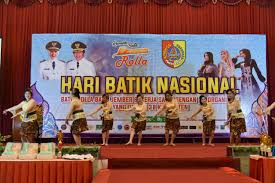
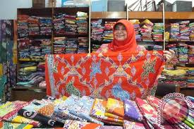
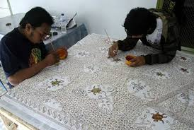
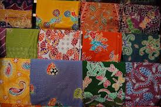
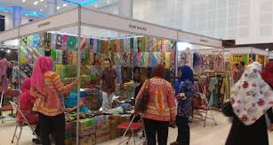

Rumah Batik Rolla Jember
Batik Khas Kota Jember
Home
Download List Jualan
Contact
Stream
Picture
News
Info
Nama UMKM
:
Batik Rolla Jember
Hasil Produksi
:
Batik
Pemilik
:
Iriane Chairini Megawati
Alamat
:
Jl. Mawar No.75, Krajan, Jemberlor, Kec. Patrang, Kabupaten Jember, Jawa Timur 68118
Pameran dalam rangka (JFC)

Memperingati hari batik nasional

Hasil produksi batik rolla

Proses produksi batik rolla

Motif - motif batik rolla

Pameran atau bazaar batik rolla
Jadwal Buka
Jadwal Buka
Senin-Minggu 08.00 WIB - 22.00 WIB